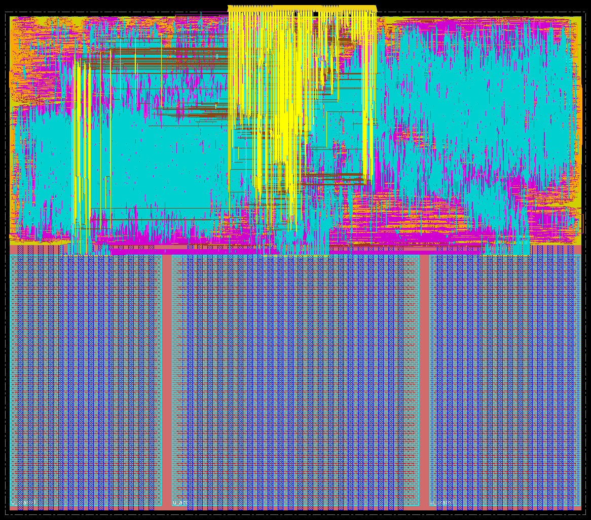

RISC-V · INT8 systolic array · CFET · Backside power · Hierarchical P&R · in progress
RISC-V + INT8 Systolic Array on a CFET PDK
A lowRISC Ibex RISC-V core with a memory-mapped 8×8 INT8 systolic-array accelerator, taken from RTL to GDS on MATRIX-A5, a research complementary-FET PDK with power delivered from the back of the wafer, using an industrial Cadence/Synopsys flow.
Two chips from the same CPU: Ibex alone as the accelerator-off baseline, and Ibex with the accelerator. The accelerator and its two 1 KB SRAMs are hardened as macros first: both pass LVS, Innovus DRC and post-P&R equivalence, and meet timing at 750 ps. Both tops then pass LVS, Innovus DRC and post-P&R equivalence at 750 ps (setup +8 ps CPU-only, +1 ps with the accelerator). On a 16×16×16 INT8 GEMM run on the routed netlists, the accelerator chip is 3.8× faster and uses 2.5× less energy than the CPU-only chip, at 2.4× the die area.
Source on GitHub 3D chip view Floorplan Signoff status CPU vs NPU Gate-level sim Fault injection

Specs
OVERVIEW| Design | |
|---|---|
| CPU | lowRISC Ibex maxperf-pmp-bmfull: RV32IMCB, 3-stage, single-cycle multiplier, 16-region PMP, flip-flop register file, SecureIbex dual-core lockstep |
| Accelerator | npu_acc: 8×8 output-stationary INT8 systolic array, 32-bit accumulators, memory-mapped registers |
| Memory | 2× lram_256x32: 1 KB each (256×32, byte writes, 1-cycle read), built from standard-cell latches, hardened once and placed twice |
| DMA | npu_dma: tiled GEMM engine with a cycle counter; the CPU stalls on SRAM/accelerator accesses while it runs |
| Chips | ibex_cfet_top (baseline) · ibex_npu_top (CPU + accelerator) |
| Technology and flow | |
|---|---|
| PDK | MATRIX-A5 CFET, base variant, backside power delivery (research PDK) |
| Supply | 0.7 V |
| Cells | Site 0.039 × 0.072 µm · NAND2 x1 0.0084 µm² · DFF x1 0.062 µm² · 68 cells per Vt, svt / lvt / ulvt |
| Corners | Setup SSG −40 °C and 125 °C · hold FFG −40 °C and 125 °C · power TT 25 °C |
| Clock | 750 ps (1.33 GHz) for all four designs |
| Tools | Genus 25.1 (iSpatial) · Innovus 25.1 · Quantus · IC Validator V-2023.12 · Conformal 22.2 · Xcelium · Verilator |
The process: CFET with backside power
TECHNOLOGYA complementary FET stacks the nFET directly on top of the pFET instead of placing them side by side, shrinking the standard-cell footprint. MATRIX-A5 pairs this with backside power delivery: the supply comes up from the back of the wafer through a buried power rail (BPR) and backside metals BSM1–BSM3, and the front-side metals M0–M13 carry signals only.
The PDK is a research kit, not a production one. The cell library has only x1 flip-flops and no tie, tap, endcap, decap, clock-gating or scan cells, and several of its views needed work-arounds before signoff would run (below). At 0.7 V the slowest setup corner is the cold one: temperature inversion makes SSG −40 °C the worst case.

3D: from the whole chip to one transistor
GDS → 3Dibex_npu_top at true scale. Start on the whole die, then scroll toward any point, or use the buttons, to zoom about four orders of magnitude: the routed cell band, the rows and their buried power rails, a standard cell, and a single transistor with its three nanosheets.
Cell geometry: MATRIX-A5 PDK, © Georgia Institute of Technology, MATRIX-PDK Academic and Non-Commercial License v1.0.
Floorplan
IBEX_NPU_TOPThe three macros sit in a row along the bottom; the CPU and npu_dma fill the band above them. The main Ibex core and its lockstep shadow mirror each other about the die centre, with a 2 µm channel between them, and all 232 pins are on the top edge.

The routed chip in Innovus
The same floorplan after routing, as Innovus shows it. Along the bottom are u_sram0, u_acc and u_sram1, with their internal routing visible through the macro outlines and the channels between them. Above them is the routed CPU and npu_dma band. The bundle that drops from the middle of the top edge is the wiring from the 232 pins into the core.




The other three layouts


3D: the cells, nanosheet by nanosheet
GDS → 3DThe standard cells the whole chip is built from, extruded from the PDK’s cell GDS. Each transistor is three stacked nanosheets with the gate wrapped all the way round; the nFET tier sits directly on top of the pFET tier, and the supply comes up from the buried power rail underneath. Use the section plane to cut through the sheets, and the gate slider to see inside the gate.
True scale in all three axes. Drag to rotate, scroll to zoom, right-drag to pan.
System
ARCHITECTUREData accesses inside a 16 KB window at 0x1000_0000 go to npu_dma; everything else, including instruction fetch, goes to the external memory port. The window is split four ways.
| Offset | Region | Contents |
|---|---|---|
0x0000 | npu_acc | Accelerator registers |
0x1000 | SRAM0, 1 KB | A and B, row-major INT8, four values per word |
0x2000 | SRAM1, 1 KB | C, row-major INT32 |
0x3000 | DMA | CTRL, STATUS, DIMS (M/N/K in 8×8 tiles), ABASE, BBASE, CBASE, CYCLES |
One GEMM, tile by tile
Load
The CPU writes A and B into SRAM0, sets the tile counts and base addresses, and writes
CTRL.Copy a tile
For each tile (i, j, k) the DMA copies the 8×8 A and B tiles from SRAM0 into
npu_acc.Compute
The DMA starts the array and polls for done. Each processing element keeps its own 32-bit accumulator (output-stationary).
Write or accumulate C
The 64 results are written into SRAM1 for k = 0 and added to what is there for k > 0, so K can span several tiles.
Count
CYCLESholds the clock cycles of the last run. While the engine is busy, CPU accesses to the SRAMs and the array wait; the DMA registers and external memory stay reachable.
Flow
RTL → GDSLint and RTL simulation
Verilator lint; RTL testbenches for the array, the SRAM and the accelerator subsystem.
Synthesis (Genus, iSpatial)
Each block synthesized on its own, then the tops with the macros as black boxes.
Macros (Innovus)
lram_256x32andnpu_accare placed, routed and exported as abstract and timing models for the top level.Top level (Innovus)
Floorplanned, placed, clock-tree synthesized, routed and closed with post-route ECOs, with the macros beside the CPU.
Extraction and timing (Quantus)
Setup and hold checked on all four corners.
Physical verification (IC Validator)
LVS on every block and both tops.
Equivalence (Conformal)
RTL against the post-P&R netlist for each design.
Gate-level simulation (Xcelium)
SDF-annotated smoke test of
ibex_npu_top, and a GEMM benchmark on both tops at zero delay and with SDF.Power (Innovus)
report_powerat TT 25 °C with switching activity (SAIF) recorded during the gate-level benchmark.
Signoff on an immature PDK
PROBLEMS SOLVEDMost of the work was getting a research kit through an industrial signoff flow. These are the problems it raised; each one was solved and the result verified by LVS, DRC, timing or equivalence.
No tie cells
solvedThe library has no tie cells, so constant inputs have no legal driver after synthesis.
Abutted rows short
solved · LVS cleanThe stock cell GDS shorts internal nets when standard-cell rows abut.
LVS turns M4+ into ports
solved · LVS cleanThe stock LVS deck treats metal from M4 upward as ports, so ordinary signal routing on those layers fails LVS.
LVS stops at BPR
solved · LVS cleanThe stock deck does not follow the supply past the buried power rail, so the backside power network never connects.
svt-only GDS and CDL
solved · 3 Vts verifiedThe PDK ships layout and netlist views for svt cells only, so lvt and ulvt cells cannot be streamed out or checked.
Hold with backside layers
solved · hold metThe router put clock nets on the backside layers, and hold would not close.
Post-route closure, CPU top
8 ECO rounds · LVS cleanRerouting a patched design broke earlier patches, so closure on ibex_cfet_top took eight rounds.
Post-route closure, CPU + accelerator top
9 ECO roundsibex_npu_top closed at 750 ps with setup +1 ps, LVS-clean and Innovus DRC-clean.
Signoff status
RESULTS| Design | P&R | LVS | Innovus DRC | Timing | Post-P&R LEC |
|---|---|---|---|---|---|
lram_256x32 | done | PASS | clean | met, 750 ps | PASS |
npu_acc | done | PASS | clean | met, 750 ps | PASS |
ibex_cfet_top | done | PASS | clean | met, 750 ps: setup +8 ps, hold met, no max-tran/cap violations | PASS |
ibex_npu_top | done, 9 post-route ECO rounds | PASS (1.50 M transistors) | clean | met, 750 ps: setup +1 ps | PASS (synthesis → P&R and RTL → P&R) |
In the ibex_npu_top LEC the three macros are black boxes; each has its own PASS. Foundry DRC (IC Validator) has not been rerun on the final layouts.
Other measured points
Die sizes
from the DEFsibex_npu_top 115.75 × 100.37 µm · ibex_cfet_top 70.04 × 70.13 · npu_acc 49.14 × 49.97 · lram_256x32 30.03 × 49.97.
ibex_npu_top gate-level simulation
Xcelium · 750 psSmoke test passes with zero delay and at both SDF corners; the GEMM benchmark passes with zero delay and at the fast corner, the slow corner is open. Details in Gate-level simulation.
Accelerator subsystem
RTL simulation · pass16×16×16 GEMM in 2,040 DMA cycles; 8×16×24 GEMM (three accumulated K tiles) in 1,530 DMA cycles.
ibex_cfet_top synthesis
Genus iSpatial, 750 ps, lockstep included62,848 cells, 5,617 sequential, 1,040 µm² cell area; post-route 9.75 mW at TT 25 °C (vectorless, default activity).
CPU vs CPU + NPU: performance, power, area
BENCHMARKA 16×16×16 INT8 GEMM (4,096 MACs, INT32 results) on the post-P&R gate-level netlists of both chips at 750 ps. The CPU-only chip runs it in software. The accelerator chip copies A and B into SRAM0, starts the tiled-GEMM DMA, and copies C back. Power is Innovus report_power at TT 25 °C with switching activity from the fast-corner SDF simulation over the benchmark window (99.5–100 % of nets annotated); the macros are reported from their own databases and added. Area is the die area.
| Configuration | Cycles | Latency | Power | GOPS | GOPS/W | GOPS/mm² | Energy | pJ/MAC | Speedup | Energy gain |
|---|---|---|---|---|---|---|---|---|---|---|
CPU only (ibex_cfet_top), software | 18,000 | 13.50 µs | 8.80 mW | 0.61 | 69 | 124 | 118.8 nJ | 29.0 | 1.00× | 1.00× |
CPU + NPU (ibex_npu_top), end to end | 4,750 | 3.56 µs | 13.33 mW | 2.30 | 173 | 198 | 47.5 nJ | 11.6 | 3.79× | 2.50× |
| CPU + NPU, DMA kernel only¹ | 2,040 | 1.53 µs | 13.33 mW | 5.35 | 402 | 461 | 20.4 nJ | 5.0 | 8.82× | 5.83× |
| CPU + NPU, software (NPU idle) | 18,000 | 13.50 µs | 14.33 mW | 0.61 | 42 | 52 | 193.4 nJ | 47.2 | 1.00× | 0.61× |
¹ A and B already in SRAM0; whole-run average power. Die areas: ibex_cfet_top 0.0049 mm², ibex_npu_top 0.0116 mm² (2.4×). Testbench: tb/bench/tb_gemm.sv; full table and JSON: docs/ppa_comparison.md.
Where the cycles go (NPU run)
| Phase | Cycles |
|---|---|
| CPU copies A and B into SRAM0 | 899 |
| DMA tiled GEMM (CPU polling) | 2,053 |
| CPU copies C out of SRAM1 | 1,798 |
| Total | 4,750 |
The DMA’s own cycle counter reads 2,040.
Power by block
| Block | NPU GEMM | Software GEMM |
|---|---|---|
| Top level (CPU, DMA, clock tree) | 8.68 mW | 10.00 mW |
u_acc | 2.73 mW | 2.53 mW |
u_sram0 | 0.93 mW | 0.90 mW |
u_sram1 | 0.99 mW | 0.90 mW |
ibex_npu_top total | 13.33 mW | 14.33 mW |
Both runs on ibex_npu_top. The CPU-only chip draws 8.80 mW on the software GEMM.
What the numbers show
Better on every efficiency metric
despite 2.4× the area3.8× faster, 2.5× less energy per GEMM, 1.6× more GOPS/mm² and 9.5× better energy-delay product, end to end.
Bound by data movement
3 % of array peakThe 8×8 array can do 64 MACs per cycle (171 GOPS) but averages 2 inside the DMA kernel. Each 8×8×8 tile spends 35 cycles loading A and B a 32-bit word at a time and 192 reading the 64 results back, for 22 cycles of compute. The CPU copy loops cost more than the GEMM itself.
An idle accelerator is not free
+61 % energyThe software GEMM costs 61 % more energy on the accelerator chip than on the CPU-only chip: 2.5 mW in the idle array and 1.8 mW in the two SRAMs. The library has no clock-gating cell, so the macro clock trees toggle all the time.
Gate-level simulation
VERIFICATIONThe routed ibex_npu_top netlist, not the RTL, runs a short program at 750 ps: the CPU boots, writes and reads the SRAM, reads the accelerator’s INFO register through its bus interface, and the lockstep shadow core is checked on every cycle. It runs once with zero delay and once at each SDF corner, with the post-route delays of the top level and of all three macros. All three runs pass.
| Run | Delays | Input delay | Stored to 0x2000_0000 | Stored to 0x2000_0004 | Result |
|---|---|---|---|---|---|
| Zero delay | none | 75 ps | 0x000005A5 | 0x00200808 | PASS |
| SSG −40 °C | SDF, max | 200 ps | 0x000005A5 | 0x00200808 | PASS |
| FFG −40 °C | SDF, min | 130 ps | 0x000005A5 | 0x00200808 | PASS |
Inputs change 10% of the cycle after the edge, as in the I/O constraints; the SDF runs add the clock insertion delay of that corner. In both SDF runs every path delay is annotated: 984,794 of 984,794.
Setup
| Simulator | Xcelium 23.09 |
|---|---|
| Design | Innovus netlists of ibex_npu_top, npu_acc and lram_256x32 (placed twice), on the CFET cell library |
| Delays | Post-route SDF per block, annotated into the top and into u_acc, u_sram0, u_sram1 |
| Clock | 750 ps (1.33 GHz) |
| Bus model | Testbench instruction ROM and external data port; grant in the same cycle, response one cycle later |
| Timeout | 2,000 cycles |
The program
| Address | Instruction | Purpose |
|---|---|---|
0x80 | lui x1, 0x10001 | SRAM0 base |
0x84 | addi x2, x0, 0x5A5 | test value |
0x88 | sw x2, 0(x1) | write SRAM0 |
0x8C | lw x3, 0(x1) | read it back |
0x90 | lui x4, 0x10000 | accelerator base |
0x94 | lw x5, 8(x4) | read INFO |
0x98 | lui x6, 0x20000 | external memory |
0x9C | sw x3, 0(x6) | report SRAM0 value |
0xA0 | sw x5, 4(x6) | report INFO |
0xA4 | jal x0, 0 | stop |
What is tested
| Function | Block | Check | Zero delay | SSG −40 °C | FFG −40 °C |
|---|---|---|---|---|---|
| Reset and boot | u_cpu | leaves reset, fetches from 0x80 | PASS | PASS | PASS |
| Instruction execution | u_cpu | lui, addi, lw, sw, jal run in order | PASS | PASS | PASS |
| SRAM0 write and read | u_sram0 | 0x5A5 written and read back | PASS | PASS | PASS |
| Accelerator register read | u_acc | INFO = 0x200808 (N = 8, AW = 8, ACCW = 32) | PASS | PASS | PASS |
| External data bus | top-level ports | both results stored to 0x2000_0000 / 0x2000_0004 | PASS | PASS | PASS |
| Lockstep | shadow core | no major alert on any cycle after fetch | PASS | PASS | PASS |
| SRAM1 | u_sram1 | not in this program; exercised by the GEMM benchmark | not tested | not tested | not tested |
| Tiled GEMM on the systolic array | u_acc, npu_dma | not in this program; covered by the GEMM benchmark | not tested | not tested | not tested |
| Interrupts, debug | u_cpu | tied off in this test | not tested | not tested | not tested |
A connectivity smoke test of the whole routed chip. “Not tested” = not exercised by this gate-level program; the RTL test is tb/tb_npu_sys.sv.
Both chips: signoff checks and the GEMM benchmark
The GEMM benchmark runs on both routed netlists, with zero delay and at both SDF corners. A run passes when every result matches the reference.
| Check | ibex_cfet_top | ibex_npu_top |
|---|---|---|
| LVS (IC Validator) | PASS | PASS |
| LEC (Conformal): synthesis → P&R, RTL → P&R | PASS, PASS | PASS, PASS |
| GEMM, RTL (Verilator) | PASS, 18,000 cycles | PASS: software 18,000, NPU 4,750 cycles |
| GEMM, gate level, zero delay | see note² | PASS (software and NPU) |
| GEMM, gate level, FFG −40 °C (SDF, min) | PASS³, 0 timing violations | PASS, violations only before reset release |
| GEMM, gate level, SSG −40 °C (SDF, max) | PASS³; setup/hold warnings only on the flops that capture chip inputs | open⁴ |
² Passes with registers initialised at time 0; the uninitialised case is open. ³ With registers initialised at time 0. ⁴ Under investigation; register-to-register timing is signed off by STA (setup met at both slow corners).
Fault injection: does the lockstep catch upsets?
SAFETYSingle-bit upsets injected into flip-flops during the GEMM, in RTL simulation; Xcelium and Verilator agree. Testbench: tb/bench/fault_inj.svh.
| Fault | Detected by | Latency | Result |
|---|---|---|---|
| None (control) | – | – | correct, no alert |
Main core pc_id bit | main core’s own PC check, then the lockstep comparator (waveform) | same cycle; comparator ≈1.5 cycles | correct, alert |
Shadow core pc_id bit | shadow core internal alert | same cycle | correct, alert |
Register file x10 bit | shadow core internal alert (lockstep register-read check) | 3 cycles | 228 wrong outputs, flagged |
| Lockstep comparator register | output mismatch | same cycle | correct, alert |
| NPU array PE accumulator bit | nothing | – | 1 wrong output, silent |
Every upset in the CPU raises alert_major_internal; an upset in the accelerator corrupts the result silently. The alerts are pulses of one cycle or less and the core keeps running, so a system needs an alert handler that latches them. Parity or a checksum on the array, or ECC on the accumulators, would close the accelerator gap.
One upset in the waveform: main core pc_id
Fault 1 in SimVision: the software GEMM on ibex_npu_top, RTL, 750 ps clock. At the falling clock edge of cycle 2012 the testbench flips bit 2 of the main core’s pc_id_o. The force is released 10 ps later, so the register keeps the wrong value until its next write, as a real upset would. The view groups the testbench alerts, the main core, the shadow core, the lockstep comparator, the register-file word of x10 and the accelerator.

| Time | Signals | What happens |
|---|---|---|
| ≈1512.7 ns, cycle 2012 | Main_core.pc_id_o | Bit 2 flips. The main core now holds a PC that the shadow core will not compute. |
| same time | core_alert_major_internal, a_int | The main core’s own PC check fires at once. The pulse lasts about half a cycle: from the falling edge where the fault lands to the next rising edge, when pc_id_o is written again. |
| ≈1513.9–1514.7 ns | outputs_mismatch, alert_major_internal_o, lockstep_alert_major_internal, second a_int pulse | The lockstep comparator sees a main-core output that differs from the shadow’s and raises its alert for exactly one cycle, about 1.5 cycles after the fault. The delay comes from the design: the shadow runs one cycle behind, and the comparator checks registered copies of the main core’s outputs against it. |
| afterwards | Main_core, Shadow_core_1cyc_behind | Both cores keep running. The shadow’s data_req_o, data_addr_o and data_wdata_o repeat the main core’s one cycle later. Nothing stops the core or holds the alert. |
| whole window | a_bus | Stays 0: no bus-integrity alert. |
| whole window | RegFile_x10_ECC, NPU_not_covered | x10 is unchanged (0x20000010). The DMA and the array are idle (D_IDLE, S_IDLE) because this run is the software GEMM. The accelerator is in the view because the lockstep does not cover it. |
Two independent checks catch this upset: the core’s own check in the same cycle, and the lockstep comparator about 1.5 cycles later. Both alerts are short pulses, half a cycle and one cycle, which is why a system needs a handler that latches them. The waveform does not show which compared output differed.
Next
ROADMAPMacros and baseline
Done:
lram_256x32,npu_accandibex_cfet_topthrough P&R, LVS, DRC, timing and equivalence.CPU + accelerator top
Done:
ibex_npu_topthrough P&R, LVS, Innovus DRC, timing at 750 ps and equivalence, with one accepted 3 ps hold violation at the fast corner.Compare the two chips
Done for a 16×16×16 INT8 GEMM: 3.8× faster and 2.5× less energy at 2.4× the area. Not measured yet: Fmax and CoreMark/MHz.
Slow-corner gate-level simulation
Root-cause the lockstep alert in the slow-corner GEMM run of
ibex_npu_top, and the X state in the CPU-only netlist without register initialisation.Foundry DRC
Rerun IC Validator DRC on all final layouts.
Accelerator efficiency
Wide (64–128-bit) array load and drain ports, accumulation across k tiles inside the array, double-buffered tiles, a bus-master DMA instead of CPU copies, and latch-based clock gating of idle macros.
Accelerator fault detection
Parity or a checksum on the array, and an alert handler that latches the lockstep alerts.